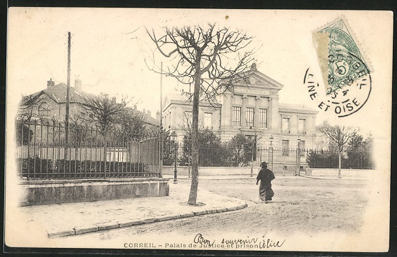
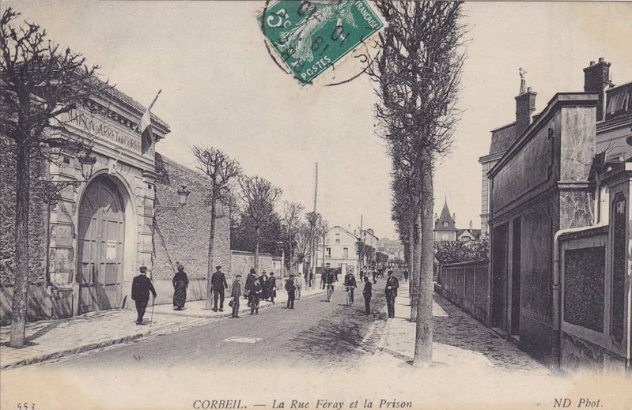
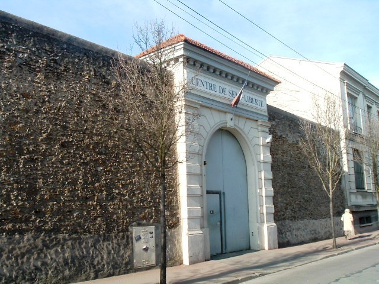
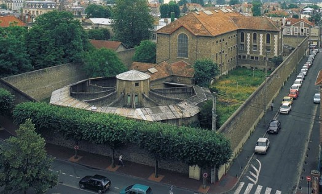
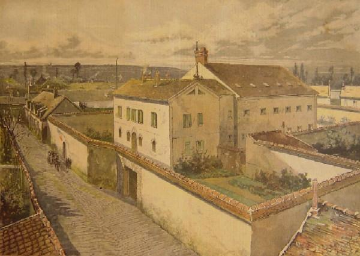
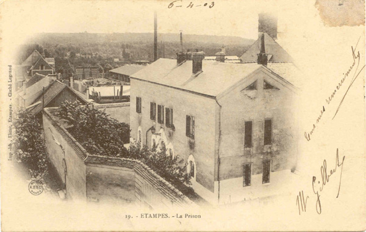

| Département | Images | Ville | Nom | Adresse | Période | Capacité | Histoire du lieu | Nombre d'exécutions |
| Essonne (91) |     |
Corbeil | Maison d'arrêt et de correction | 26, rue Féray | En service depuis 1883 | 57 places, 23 surveillants (1962) 74 places (2015) |
Prison cellulaire, la maison d'arrêt est devenue centre de semi-liberté en 1970. Son statut de prison pour peines très légères, sa proximité avec Paris et son bon état général fait qu'elle est régulièrement employée comme lieu de tournage pour la télévision ("Clem", en 2013) ou pour le cinéma ("Une robe noire pour un tueur", de José Giovanni, en 1980). | Aucune exécution |
| Essonne (91) |   |
Etampes | Maison d'arrêt et de correction | Rue de la Prison | 1849-1968 | 32 places, 10 surveillants (1962) | Prison cellulaire, oeuvre de l'architecte Pierre Magne, située à côté du tribunal. Détenus transférés à la nouvelle maison d'arrêt de Fleury-Mérogis. Lieu de tournage de films, dont "Adieu Poulet" en 1976. Démolie en 1978 pour construire un parking. | Aucune exécution |
| Essonne (91) | Fleury-Mérogis | Maison d'arrêt | 7, avenue des Peupliers | En service depuis 1968 | 2850 places | La construction du plus grand établissement pénitentiaire d'Europe fut décidée en 1962, à la base dans le but de faire fermer la prison de la Santé à Paris, considérée déjà à l'époque comme vieille, insalubre et victime d'une surpopulation trop importante. Les bâtiments de la maison d'arrêt des hommes, partie principale de la nouvelle prison, furent édifiés sur quatre ans, entre 1964 et 1968, tandis que tout à côté, on construisait le quartier des mineurs et jeunes adultes et celui destiné aux femmes. Actuellement, la surpopulation est devenu un problème majeur à Fleury comme dans la plupart des autres établissements pénitentiaires de France, puisque l'endroit accueille en moyenne 4000 détenus, soit environ 40% de plus que ce qu'il ne faudrait. | Aucune exécution |
{kind=link}
{kind=link}
{kind=link}
{kind=link}
{kind=link}
{kind=link}